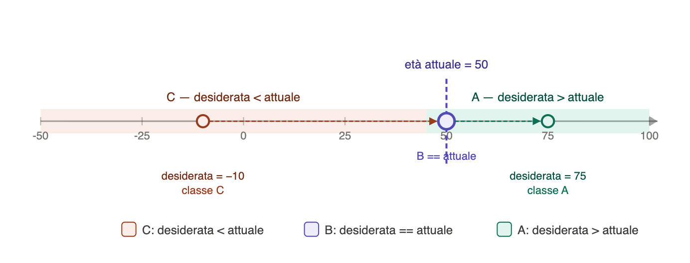
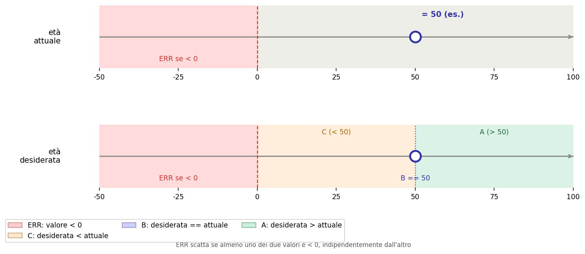

Modulo 03 · Testare il programma e operazioni su booleani
A fine lezione
- Sai modellare piccoli problemi con automi a stati finiti?
- Sai ragionare sui casi limite anche quando il codice sembra plausibile a prima vista?
- Sai definire sintassi e semantica del
while? - Sai distinguere guardia del ciclo, stato e condizione di terminazione?
- Sai usare il
whileconoscendo il numero di iterazioni da effettuare?
Automi a stati finiti
Quello che fa un programma con if/elif/else è, in fondo, sempre la stessa cosa: partizionare gli input in classi, e associare a ciascuna classe un comportamento diverso.
Un automa a stati finiti è il modello astratto di questa idea.
Invece di pensare al codice riga per riga, un automa descrive:
- quali classi di input esistono;
- a quale output (o stato) ciascuna classe conduce;
- se ci sono input che non sono stati considerati.
Struttura di un automa
Un automa è definito da:
- un insieme di stati (le situazioni possibili del programma);
- un insieme di input possibili;
- una funzione di transizione: dato uno stato e un input, restituisce lo stato successivo;
- uno stato iniziale;
- un insieme di stati finali (gli output validi).
Esempio: classificare un numero
Consideriamo il programma che classifica un numero come negativo, zero o positivo.
Gli input sono tutti gli interi. Le classi di output sono tre:
| Input | Output |
|---|---|
...-200, ...-13, ...-2, -1 | "negativo" |
0 | "zero" |
1, 2, ..., 17, ... 3456, ... | "positivo" |
L'automa ha tre possibili stati finali corrispondenti alle tre classi. Ogni intero appartiene esattamente a una classe: la partizione è completa (nessun input mancante) e disgiunta (nessun input in due classi contemporaneamente).
┌─── n < 0 ────► ╔═══════════╗
│ ║ negativo ║
┌───────┐ │ ╚═══════════╝
──►│ start │──┼─── n == 0 ───► ╔═══════════╗
└───────┘ │ ║ zero ║
│ ╚═══════════╝
└─── n > 0 ────► ╔═══════════╗
║ positivo ║
╚═══════════╝Quando scriviamo if/elif/else stiamo implementando questa partizione nel codice.
Usare l'automa per ragionare sui casi
Il vantaggio del modello è che forza a chiedersi:
- la partizione è completa? Ogni input possibile finisce in qualche classe?
- la partizione è disgiunta? Nessun input soddisfa due condizioni contemporaneamente?
- ho considerato i casi limite? Cosa succede con
0, con valori negativi, con stringhe vuote?
Riprendiamo l'esercizio 13 (nome, età attuale, età desiderata).
Prima di aggiungere la validazione degli input, la partizione era:

Questa partizione è completa per gli interi, ma non distingue gli input validi da quelli non validi.
Aggiungendo la validazione, la partizione diventa:

┌─ desiderata <= 0 ─┐
▼ |
┌── attuale <= 0 ───────► ╔═════════╗ ─────────────────┘
│ ║ ERRORE ║
┌───────┐ │ ╚═════════╝◄────────────────────┐
──►│ start │────────┤ |
└───────┘ │ |
└── attuale > 0 ──────► ┌──────────────┐ |
│ input valido │─ desiderata <= 0 ┘
└──────┬───────┘
┌────────────┼────────────┐
│ │ │
des > att des == att des < att
│ │ │
▼ ▼ ▼
╔════════════╗ ╔══════════╗ ╔═══════════════╗
║ tra Y anni ║ ║ già ora ║ ║ già superato ║
╚════════════╝ ╚══════════╝ ╚═══════════════╝Disegnare l'automa — anche solo come tabella — è un modo per verificare che il codice copra davvero tutti i casi prima ancora di scrivere un
if.
Automi su sequenze: input che arriva in più passi
Fino a qui l'automa riceveva un solo valore e si spostava in uno stato finale. Ma il problema dell'età desiderata mostra qualcosa di diverso: l'input arriva in due passi — prima eta_attuale, poi eta_desiderata — e lo stato del programma cambia a ogni passo.
Possiamo pensarlo così:
- si parte dallo stato iniziale;
- arriva il primo valore (
eta_attuale): a seconda del valore, si segue una transizione; - arriva il secondo valore (
eta_desiderata): a seconda del valore, si segue un'altra transizione; - si arriva a uno stato finale che descrive il caso.
L'automa dell'età desiderata che abbiamo visto sopra funziona esattamente così: le frecce non sono tutte uscenti dallo stesso punto, ma il percorso dipende da quello che leggiamo in sequenza.
Questo è il primo passo verso i programmi che leggono sequenze di dati: ogni nuovo valore letto è un passo nell'automa.
Esercizi finali
Scrivere il programma
Per questi esercizi, prima di scrivere il codice:
- identifica le classi di input (quanti casi distinti esistono?);
- compila la tabella dei desiderata;
- scrivi il programma e verifica.
F1. Il programma legge un numero intero e stampa "divisibile per 2", "divisibile per 3", "divisibile per entrambi" o "nessuno dei due".
| Input | Output atteso |
|---|---|
6 | |
4 | |
9 | |
7 |
F2. Il programma legge una stringa e stampa "vuota", "corta" (1–3 caratteri), "normale" (4–10) o "lunga" (più di 10).
| Input | Output atteso |
|---|---|
"" | |
"ciao" | |
"hi" | |
"informatica" |
F3. Il programma legge tre interi a, b, c e stampa "triangolo" se formano un triangolo valido (la somma di due lati qualsiasi è maggiore del terzo), "no" altrimenti.
a | b | c | Output atteso |
|---|---|---|---|
3 | 4 | 5 | |
1 | 2 | 5 | |
5 | 5 | 5 | |
0 | 3 | 3 |
F4. Il programma legge due stringhe s1 e s2 e stampa la più lunga. Se hanno la stessa lunghezza, stampa quella che viene prima in ordine alfabetico.
s1 | s2 | Output atteso |
|---|---|---|
"abc" | "de" | |
"hi" | "ab" | |
"mela" | "pero" |
Trovare l'errore
Per questi esercizi compila prima i desiderata, poi esegui il codice e confronta.
D1. Il programma legge un voto e stampa la valutazione corrispondente.
voto = int(input("Voto: "))
if voto >= 18:
if voto >= 24:
if voto >= 28:
print("Ottimo")
print("Buono")
print("Sufficiente")| Input | Output atteso | Output reale |
|---|---|---|
15 | ||
20 | ||
26 | ||
30 |
D2. Il programma legge tre interi e stampa il minore.
a = int(input("a: "))
b = int(input("b: "))
c = int(input("c: "))
if a < b and a < c:
print("Il minore è " + str(a))
if b < a and b < c:
print("Il minore è " + str(b))
if c < a and c < b:
print("Il minore è " + str(c))a | b | c | Output atteso | Output reale |
|---|---|---|---|---|
1 | 2 | 3 | ||
3 | 1 | 2 | ||
2 | 2 | 3 | ||
2 | 2 | 2 |
Dal if al while
Abbiamo già visto il costrutto if:
if condizione:
bloccoIl blocco viene eseguito al massimo una volta: se la condizione è vera, entra; altrimenti salta.
Ma se vogliamo ripetere il blocco finché la condizione resta vera?
x = 0
if x < 5:
print(x)
x = x + 1Questo stampa 0 e basta. Per stampare 0, 1, 2, 3, 4 dovremmo copiare il blocco cinque volte — e se non sappiamo in anticipo quante volte, non possiamo farlo.
Il while risolve esattamente questo problema:
x = 0
while x < 5:
print(x)
x = x + 1La struttura è identica all'if. La differenza è una sola: dopo aver eseguito il blocco, while torna a valutare la condizione. Se è ancora vera, ripete. Se è falsa, si ferma.
if | while | |
|---|---|---|
| valuta la condizione | una volta | a ogni iterazione |
| esegue il blocco | al massimo una volta | finché la condizione è vera |
| va verso la terminazione | sempre | solo se lo stato cambia |
Questa è la differenza fondamentale: con while, il blocco deve modificare lo stato in modo da portare prima o poi la condizione a diventare falsa. Se non lo fa, il ciclo non si ferma mai.
Sintassi del while
Forma generale:
while espressione_booleana:
istruzione-1
istruzione-2
...
istruzione-kParti da riconoscere:
whileintroduce una ripetizione condizionata;- la guardia è un'espressione booleana;
- i due punti
:aprono il blocco; - il blocco del ciclo va indentato.
Semantica del while
- Python valuta la guardia;
- se vale
True, esegue il blocco; - poi torna a valutare la guardia (punto 1);
- se vale
False, esce dal ciclo.
le istruzioni da 1 a k vengono ripetute in ordine finchè lo stato del programma continua a soddisfare l'
espressione booleana
Esempi
contatore
i = 0
while i < 5:
print(i)
i = i + 1i = 0è l'inizializzazione dello stato;i < 5è la guardia: il ciclo continua finché valeTrue;print(i)è l'istruzione;i = i + 1è l'aggiornamento che avvicina il programma alla terminazione.
Cosa succede se si dimentica
i += 1? La guardia non cambia mai e il ciclo non finisce mai: ciclo infinito.
input ripetuto
risposta = input("Continuo? (s/n): ")
while risposta == "s":
print("Ancora...")
risposta = input("Continuo? (s/n): ")Qui il numero di ripetizioni non è noto in anticipo: dipende da cosa inserisce l'utente.
Esercizi
- Scrivi un programma che stampi i numeri da 1 a 10.
- Scrivi un programma che legge un numero
ndall'input e stampa i numeri dana0. - Scrivi un programma che legge un numero
ndall'input e stampa i numeri da-nan. - Dato un certo numero (es.
pagine = 120), stampa:
Sto leggendo la pagina 1
Sto leggendo la pagina 2
...fino all'ultima pagina.
- Scrivi un programma che stampi i numeri dispari compresi tra 1 e 10 (inclusi).
- Scrivi un programma che legge una parola dall'input e stampa solo le lettere in posizione pari (indice 0, 2, 4, …).
- Scrivi un programma che chiede in input un intero e stampa le potenze di quel numero finché il valore non eccede 1000. Ad esempio, se viene inserito
2:
2^1 = 2
2^2 = 4
2^3 = 8
2^4 = 16
2^5 = 32
2^6 = 64
2^7 = 128
2^8 = 256
2^9 = 512- Scrivi un programma che chiede all'utente di inserire una parola. Il programma continua finché l'utente non scrive
fine.
Inserisci una parola: storia
Inserisci una parola: geografia
Inserisci una parola: fineCicli annidati
Un ciclo può contenere un altro ciclo nel suo corpo. Il ciclo interno viene eseguito per intero a ogni iterazione del ciclo esterno.
Esempio: stampare tutte le combinazioni di pagina e riga.
pagine = 3
righe = 5
p = 1
while p <= pagine:
r = 1
while r <= righe:
print("Pagina", p, "Riga", r)
r = r + 1
p = p + 1Output:
Pagina 1 Riga 1
Pagina 1 Riga 2
...
Pagina 3 Riga 5Punti da osservare:
- il ciclo esterno controlla
p, che va da1apagine; - il ciclo interno controlla
r, che riparte da1a ogni nuova pagina; - ogni ciclo ha la propria variabile di stato e il proprio aggiornamento.
Lo stato del programma durante un while
Ogni ciclo while si legge seguendo come cambia lo stato a ogni iterazione.
Caso 1 · contatore
i = 0
while i < 5:
print(i)
i = i + 1| Passo | Codice sorgente | Stato della memoria | Output |
|---|---|---|---|
| 1 | i = 0 | i → 0 | |
| 2 | while i < 5 → True | i → 0 | |
| 3 | print(i) | i → 0 | 0 |
| 4 | i = i + 1 | i → 1 | |
| 5 | while i < 5 → True | i → 1 | |
| 6 | print(i) | i → 1 | 1 |
| 7 | i = i + 1 | i → 2 | |
| … | … | … | … |
| n | while i < 5 → False | i → 5 |
Caso 2 · valore speciale di stop
numero = int(input("Numero (-1 per terminare): "))
somma = 0
while numero != -1:
somma = somma + numero
numero = int(input("Numero (-1 per terminare): "))(ipotesi: l'utente inserisce 4, poi 7, poi -1)
| Passo | Codice sorgente | Stato della memoria | Output |
|---|---|---|---|
| 1 | numero = int(input(...)) ← utente: 4 | numero → 4 | |
| 2 | somma = 0 | numero → 4, somma → 0 | |
| 3 | while numero != -1 → True | numero → 4, somma → 0 | |
| 4 | somma = somma + numero | numero → 4, somma → 4 | |
| 5 | numero = int(input(...)) ← utente: 7 | numero → 7, somma → 4 | |
| 6 | while numero != -1 → True | numero → 7, somma → 4 | |
| 7 | somma = somma + numero | numero → 7, somma → 11 | |
| 8 | numero = int(input(...)) ← utente: -1 | numero → -1, somma → 11 | |
| 9 | while numero != -1 → False | numero → -1, somma → 11 |
Caso 3 · cicli nidificati
p = 1
while p <= 2:
r = 1
while r <= 3:
print(p, r)
r = r + 1
p = p + 1| Passo | Codice sorgente | Stato della memoria | Output |
|---|---|---|---|
| 1 | p = 1 | p → 1 | |
| 2 | while p <= 2 → True | p → 1 | |
| 3 | r = 1 | p → 1, r → 1 | |
| 4 | while r <= 3 → True | p → 1, r → 1 | |
| 5 | print(p, r) | p → 1, r → 1 | 1 1 |
| 6 | r = r + 1 | p → 1, r → 2 | |
| 7 | while r <= 3 → True | p → 1, r → 2 | |
| 8 | print(p, r) | p → 1, r → 2 | 1 2 |
| … | … | … | … |
| n | while r <= 3 → False | p → 1, r → 4 | |
| n+1 | p = p + 1 | p → 2, r → 4 | |
| n+2 | while p <= 2 → True | p → 2, r → 4 | |
| n+3 | r = 1 ← reinizializzazione | p → 2, r → 1 | |
| … | … | … | … |
| m | while p <= 2 → False | p → 3 |